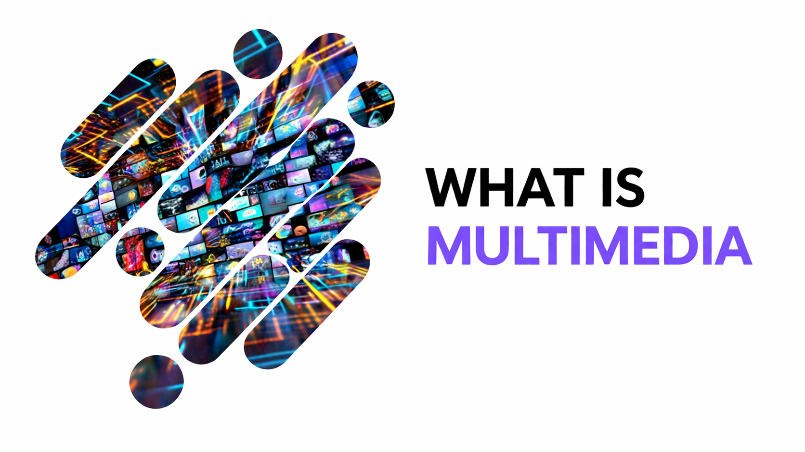
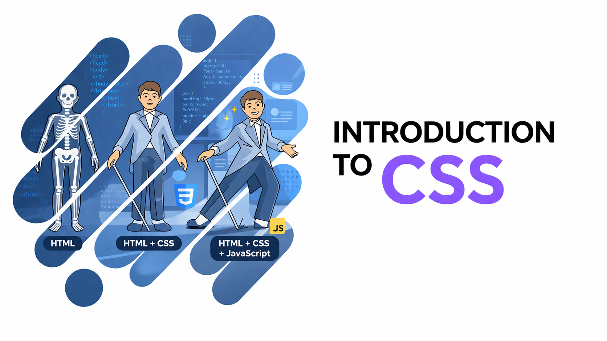

Medium.com
TYPES OF GRAPHICS IN MULTIMEDIA
This article explains how raster and vector graphics are used effectively.
Read More
This article explains how raster and vector graphics are used effectively.
Read MoreThis article explains how color conversion and transformation change colors between models.
Read More
This article explains how multimedia combines text, audio, video, graphics, and animation together.
Read More
This article explains how CSS styles web pages to make websites attractive.
Read MoreThis article explains the basics of HTML and how it is used to create web pages
Read More